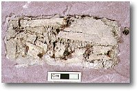
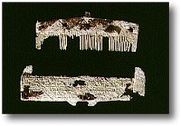

Involvement in excavation
An extremely
deteriorated bone/antler comb was received in the Organic Artefacts Conservation
Studio following its excavation from an Anglo-Saxon cemetery at Buckland,
Kent, (Figure 1). Tissue paper, used on site to hold the comb together
as it was lifted, was sticking to it. In the laboratory careful cleaning
was carried out under the microscope using solvents and small tools, revealing
the presence of a comb and comb case.
Whilst Anglo-Saxon combs are not un-common, a comb-case is a very rare
find. Both were badly damaged and degraded. The central bone layer, from
which the teeth had been cut, was broken into several fragments. This
was held between two outer plates. The comb had been slotted into a case,
consisting of two bone plates held on an internal frame.
Both comb and case were decorated with incised decoration. Their components had been held together with iron rivets. During burial the bone had distorted and cracked. The rivets were severely corroded.After cleaning, the fragments were strengthened with consolidants. Broken joins were repaired and an adhesive was used to hold the component layers together. All the consolidants and adhesives used can be removed in the future if necessary. Due to the distortion from burial it was not possible to replace the comb in its case. The rivets were also not replaced; corrosion had increased their size so that even after cleaning they would have prevented the correct positioning of fragments.
Top right: The comb and comb-case on arrival in the conservation studio
Bottom right: After treatment.
Department
of Medieval and Later Antiquities
Find Number DBC1994, Grave 420, 922



